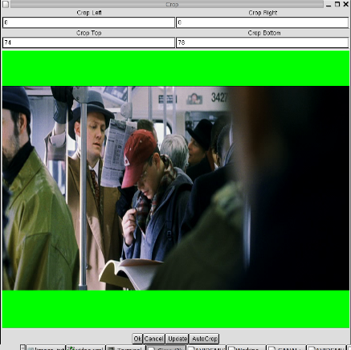
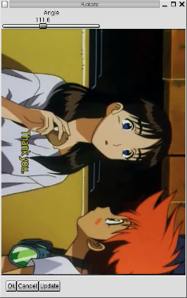
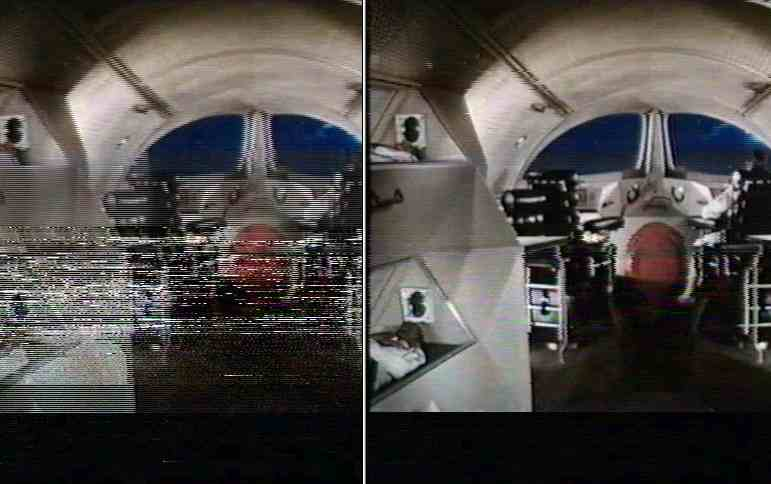
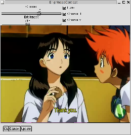
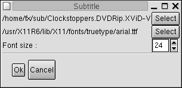

Video
1.Modalità Process/Copy
Modalità Copy
In quaesta modalità, avidemux copierà solamente il flusso video in entrata sul file selezionato senza modificarlo.
Vi è un'eccezione: per l'esportazione verso *VCD il video è impostato in modalità Process.
Warning: Per i flussi mpeg1/2, il video è internamente visto come un frame non compresso YV12, per cui assicuratevi di non essere mai in modalità Copy quando lavorate su questi flussi mpeg. |
Warning: Tagliare il file in qualunque punto causerà dei problemi. |
Modalità Process
Avidemux inizialmente decomprimerà il video in frames YV12, sui quali applicherà eventuali filtri. Quindi condificherà il video usando il codec prescelto.
2.Meta-Filtri
Un meta filtro è un gruppo o una modifica di altri filtri. Ecco alcuni di essi:
- VCD/SVCD/DVD res: Questi meta-filtri ridimensionano automaticamente il video nella dimensione giusta per essere compatibili con gli standard VCD/DVD/SVCD. Essi utilizzano internamente black borders e resize.
- Partial: questo meta-filtro modifica un altro filtro in modo che venga applicato ad una parte del video. Per esempio, potrete deinterlacciare solo una parte del video. Per farlo, creare un filtro deinterlace, selezionatelo e cliccare sul pulsante Partial. Inserire i frame di inizio/fine.
3.Filtri di alterazione dell'immagine
Crop
Questo filtro ritaglia una porzione del video (per esempio per eliminare i bordi neri). I valori di ritaglio sinistro/destro/sopra/sotto devono essere pari.
Un'anteprima della parte ritagliata è disponibile cliccando sul pulsante update.
Su di un video pulito (dvd), potete provare cliccando sul pulsante Autopcrop.

Resize
Questo filtro ridimensiona il video. E' derivato dalla funzione resize di avisynth. Sono disponibili due metodi (equivalenti a bilineare/bicubico).
Blacken Borders
Questo filtro sostituisce i bordi del video con bordi in nero puro. E' utile per sostituire bordi rovinati con bordi perfettamente neri (per esempio nell'acquisizione da VHS).
Add Black Borders
Questo filtro *AGGIUNGE* i bordi neri (il precedente li sostituisce). E' usato internamente da *VCD res per ridimensionare il video ad una data dimensione senza alterarne le proporzioni.
Flip vertical
Questo filtro ribalta verticalmente il video. Utile per esempio con schede di acquisizione video malfunzionanti.
Rotate
Questo filtro è stato scritto da Tracy (vedi il file per maggiori informazioni)
Ruota l'immagine di 90/180/270 gradi. L'autore lo usa con i video realizzati con la sua videocamera in modalità landscape.

4.Filtri di deinterlacciamento
Deinterlace
Questo filtro è una trasposizione a YV12 del filtro smart-deintarlace scritto da Donald Graft.
Riconosce se l'immagine è interlacciata e ne offusca le relative parti.
Questo filtro richiede due parametri:
- Detection threshold : minore è il valore e più facilmente verrà riconosciuto l'interlacciamento. Un valore troppo basso darà un eccessivo offuscamento!
- Blur threshold : se il video viene riconosciuto come interlacciato, le parti sotto questa soglia saranno offuscate. Il valore deve essere più basso della soglia precedente.
Pal Shift
Questo filtro prende un campo di una immagine ed un altro
dalla successiva.
Molti film (e alcuni DVD) sono itnerlacciati in questo modo.
Questo filtro non effettua alcun controllo, per cui attivarlo, visualizzaee un'anteprima e se soddisfatti mantenerlo.
Pal Smart
Questo filtro è un misto tra i due precedenti.
Analizza l'immagine corrente e l'immagine con il filtro Pal-shift, dopodiché prende la meno interlacciata tra le due e applica il filtro smart deinterlace. Dato che il chroma non viene preso in considerazione possono verificarsi piccoli errori di chroma.
E' un pò lento ma molto efficiente se il video è di buona qualità.
Può essere utilizzato anche come un IVTC economico dato che ricostruisce il frame progressivo, ma mantiene il video a 30 fps non scartando i duplicati per raggiungere i 24 fps.
Questo filtro è un misto tra i due precedenti.
Drop
Questo filtro è stato scritto da Ron Reithoffer.
Se un campo è troppo diverso dai vicini in termini spazio/temporali (dropout VHS) viene scartato e sostituito con il valore medio tra il fram precedente e quello successivo.
Secondo l'autore questo deve essere il primo filtro nella lista e non funziona come si deve con immagini molto interlacciate.

5.Filtri basati su Convolution Kernel
Convolution
Questi filtri sostituiscono ogni pixel con una convoluzione basata su di una matrice 3x3 bounding (eccetto il filtro Large median che opera su di una matrice 5x5).
Possono lavorare su luma e/o chroma.
Median e Mean usati sul solo chroma sono molto utili per eliminare i disturbi sulle acquisizioni da videocassette.
6.Filtri Luma/Chroma
Swap u / v
Talvolta vi sono inversioni visibili sui piani chroma (provocati da alcune schede di acquisizione difettose).
Contrast
Questo filtro regola linearmente il contrasto e la luminosità su luma e/o chroma u/v.
Può essere d'aiuto su video troppo chiari, troppo scuri o
con dominanti blu o rosse.

Luma/chroma only
7.Filtri Smoother
Stabilize
Questo filtro sostituisce ogni pixel con il valore di soglia basandosi su di una media pesata tra i suoi vicini temporali e spaziali.
Denoise
Questo filtro è stato importato dal filtro DNR di transcode.
Sostituisce ogni pixel con un valore di soglia basato su di una media di riferimento del pixel stesso.
Lavora su luma e chroma con soglie separate.
FluxSmooth
Questo filtro è stato importato da avisynth, ed è stato originariamente scritto da Ross Thomas.
Vedere la documentazione di avisynth per i dettagli.
Temporal Cleaner
Questo filtro è originario di Jim Casaburi e parte dei filtri di virtual dub.
E' stato portato da virtual dub ad avisynth da Vlad59.
Vedere le documentazioni di virtual dub/avisynth per i dettagli.
8.Vari
Subtitle
Questo titolo aggiunge i sottotitoli presenti in un file di
testo srt/sub.
E' possibile selezionare carattere e tipo di carattere.

|